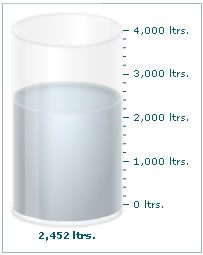

Cylinder Gauge > Creating a gauge |
We will create our first cylinder gauge to depict the amount of petrol left in a fuel tanker, whose capacity is 4000 litres. We'll show a value of 2452 litres. The final gauge would look as under: |
|  |
To create this chart, our tasks can be broken down into the following segments:
|
| XML for the chart |
| The XML for the chart can be listed as under: |
| <chart palette='3' lowerLimit='0' upperLimit='4000' numberSuffix=' ltrs.' bgColor='FFFFFF'> <value>2452</value> </chart> |
| Explanation |
First of all comes the <chart> element which is the starting element for any chart that you create using FusionWidgets. Now we define the lower and upper limits of the gauge scale. To define the limits, we use the lowerLimit and upperLimit attributes of the <chart> element. We also set the palette number and number suffix as ' ltrs.' |
| <chart palette='3' lowerLimit='0' upperLimit='4000' numberSuffix=' ltrs.' bgColor='FFFFFF'> |
| After that, we set the value of the chart using: |
| <value>2452</value> |
| And this finishes our first cylinder gauge. |